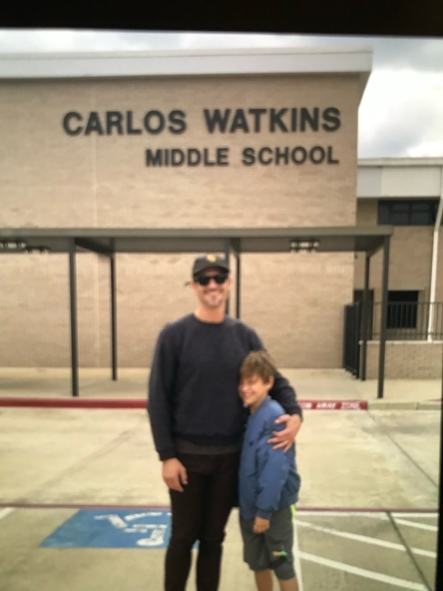
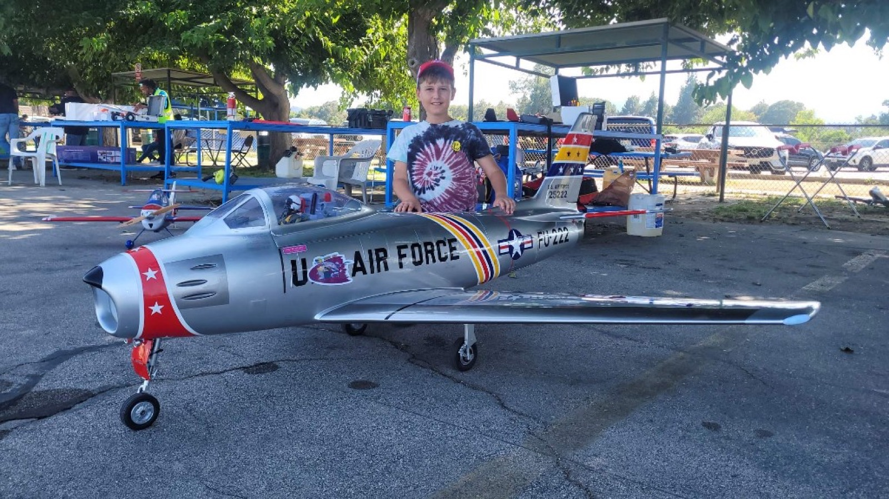
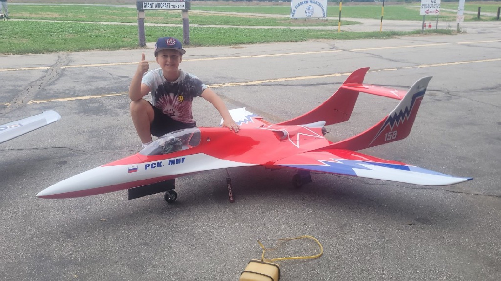
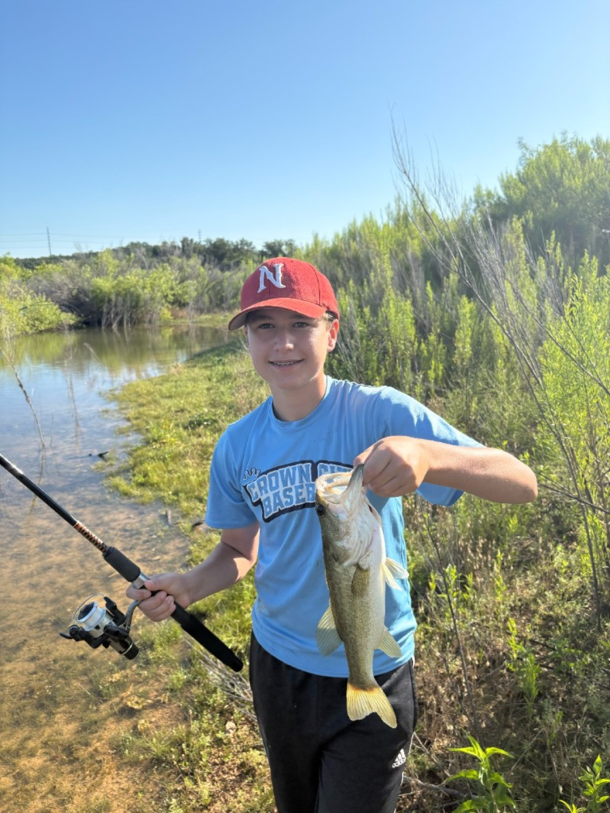
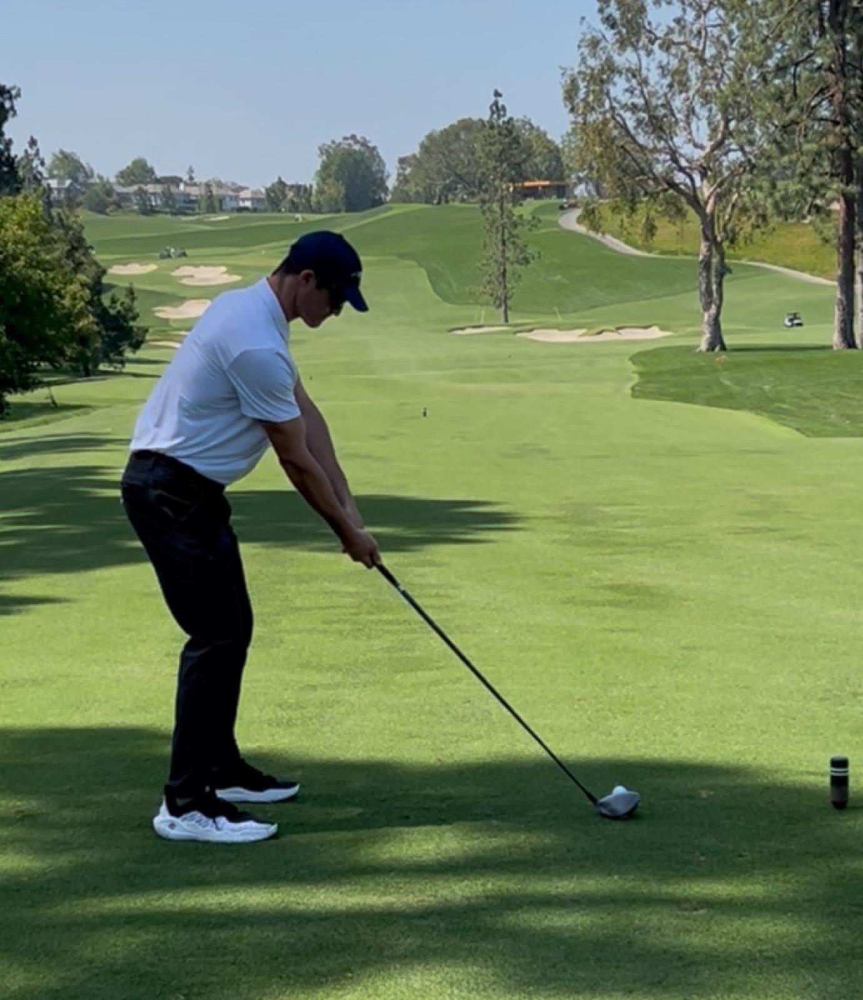
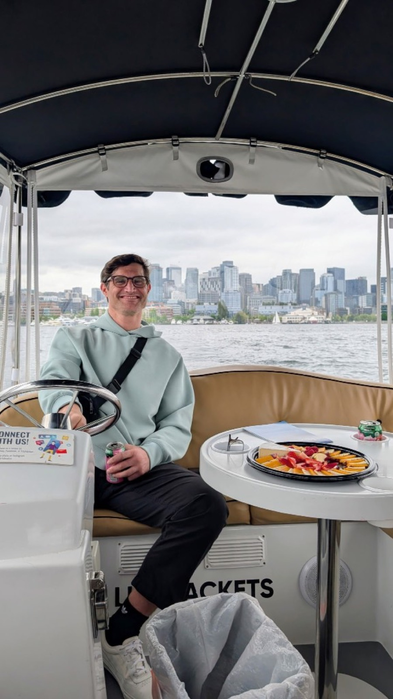

Sam
Weinberger.
Applied Cognitive and Social psychologist
9+ years of mixed-methods research across fintech, sports media, and healthcare—connecting usability, field research, and AI-augmented workflows to product and revenue outcomes.
Selected work
Case studies from Robinhood prediction markets, FanDuel sportsbook research, NFL digital products, and academic methods work.
FTUX Optimization & Strategic Retention
Behavioral segmentation and MaxDiff research that recovered $17M in monthly revenue.
Live Prototype Interventions & UX Architecture
AI-orchestrated prototyping that collapsed a weeks-long design loop into a single interview.
Research Ops Automation Lifecycle
An autonomous AI workflow that quadrupled concurrent research capacity.
Cross-Sell Acquisition & Research Org Scale
Doubled cross-sell acquisition while scaling UX Research into a 32-person division.
NFL Direct-to-Consumer Packaging Research
Design studios and a national panel that revealed how price reshapes package preference.
Competitive Product Benchmarking System
A quarterly usability & loyalty scorecard across FanDuel products and key competitors.
Team Chemistry Measurement Program
A season-long sports psychology program to measure and shape team cohesion.
Smartphone-Enabled Experience Sampling
Bringing ESM into the field with PACO to study engagement, stress, and burnout in daily life.
About
I’m an applied cognitive and social psychologist turned UX Engineer and Quantitative UX Researcher. I specialize in bridging the gap between human behavior, advanced data analytics, and interactive design. My academic background—including graduate research focused on human motivation, persuasion, and systemic behavior change—serves as the foundation for how I approach product strategy.
After starting my career in human factors and FDA-regulated medical device research, I stepped into the digital product space. I spent my early UX career at the NFL optimizing the Fantasy mobile app, and later spent four years at FanDuel helping build and scale one of the most successful sportsbooks on the market. Most recently, I joined Robinhood to focus on first-time user experience, customer acquisition, and retention within the rapid-fire world of event contracts and prediction markets.
Today, I operate as a highly technical hybrid. By integrating generative AI and automated workflows into my practice, I’ve expanded my reach across product, design, engineering, and data science. Whether I am orchestrating end-to-end research operations, deploying automated quantitative surveys, or rapidly generating interactive, engineering-ready prototypes mid-interview, I focus on one thing: translating complex human behavior into massive product momentum.
My weekends revolve around my 13-year-old son, Max. Max wants to be a pilot, so we joined the Academy of Model Aeronautics (AMA). We spend our Saturdays and Sundays building and flying remote-controlled turbine jets—he is the pilot, and I am the mechanic.
One day, he decided to try out baseball and follow in my footsteps—a choice that was truly intrinsically motivated. As a psychologist, the framework that guides both my parenting and my professional design work is Self-Determination Theory (Deci & Ryan, 2000), which centers on how we foster that exact kind of autonomy, competence, and internal drive.
I read and write poetry as a personal creative outlet, with Pablo Neruda and Emily Dickinson being two of my favorite authors.
I played Division I football and baseball, and later trained for Team USA as a track cyclist. Those years taught me how to be a true team player, maintain intense self-discipline, and constantly compete against my own limits. I love playing basketball and golf.





